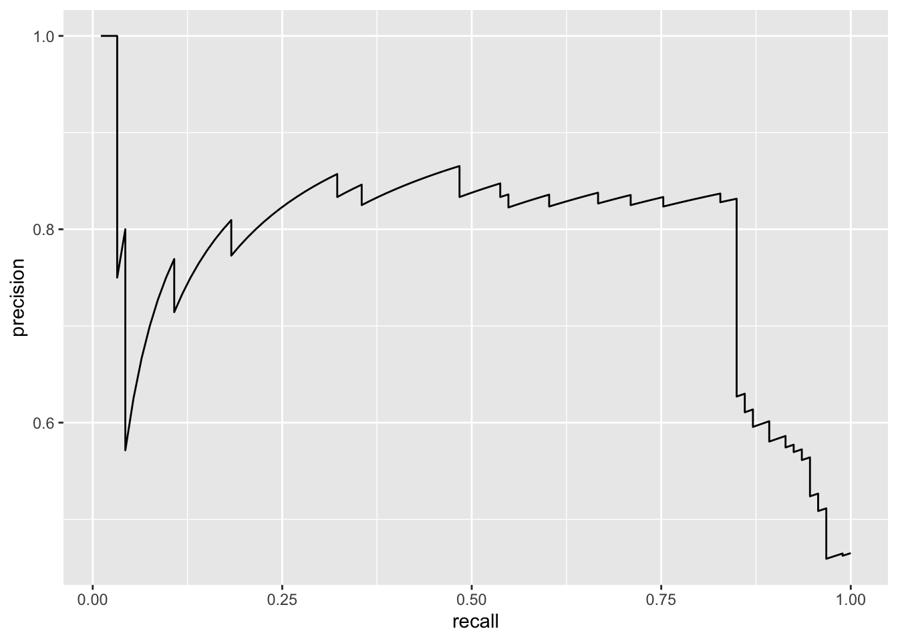
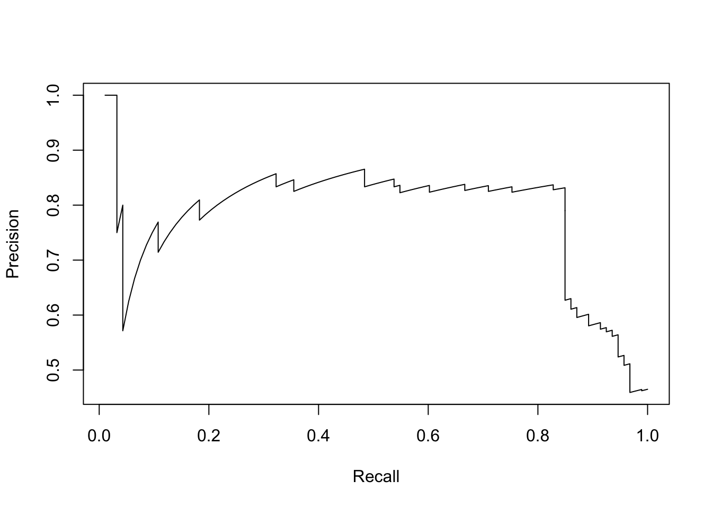
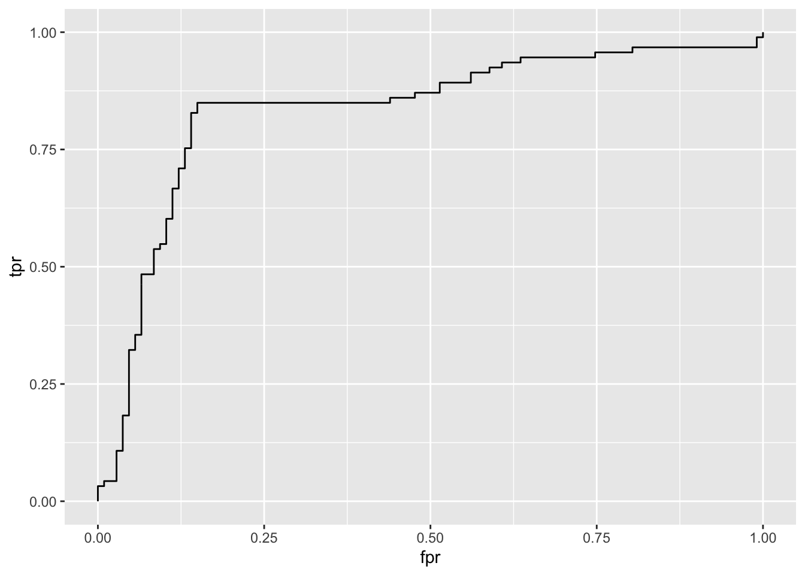
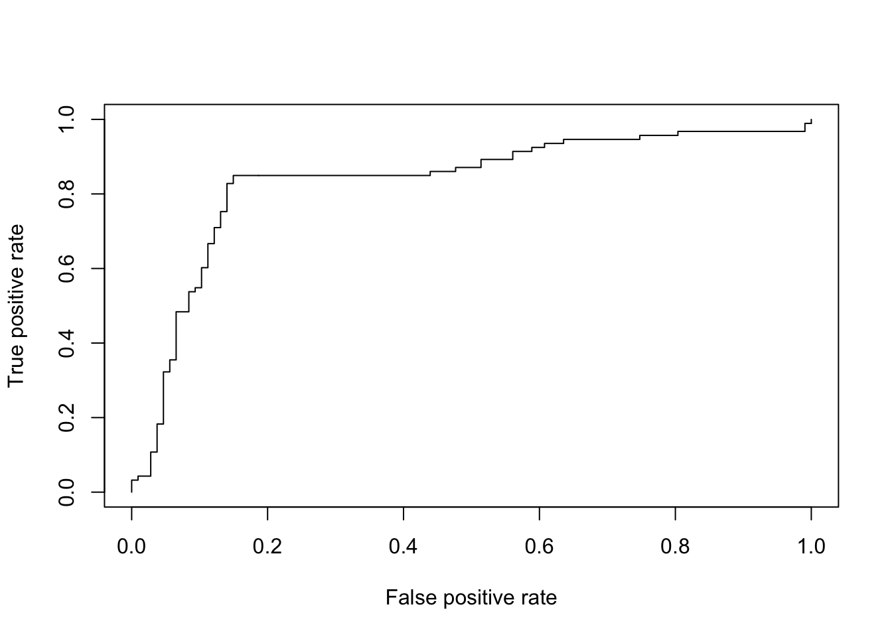

rm(list = ls())
library(ggplot2)
library(dplyr)We do side-by-side comparison with ROCR so that we need to install ROCR as well.
devtools::install_github('liangyy/silver-standard-performance')## Skipping install of 'SilverStandardPerformance' from a github remote, the SHA1 (9111a721) has not changed since last install.
## Use `force = TRUE` to force installationif(!"ROCR" %in% rownames(installed.packages())) {
install.packages('ROCR')
}
library(SilverStandardPerformance)
library(ROCR)## Loading required package: gplots##
## Attaching package: 'gplots'## The following object is masked from 'package:stats':
##
## lowess# load data
data(ROCR.simple)
names(ROCR.simple)## [1] "predictions" "labels"head(ROCR.simple$predictions)## [1] 0.6125478 0.3642710 0.4321361 0.1402911 0.3848959 0.2444155head(ROCR.simple$labels)## [1] 1 1 0 0 0 1# format into prroc working case
# namely, to add candidate ID's
ROCR.simple$gene_name = paste('gene', 1 : length(ROCR.simple$predictions))
# extract gene names for real signal
true_genes = ROCR.simple$gene_name[which(ROCR.simple$labels == 1)]SilverStandardPerformancedf = gen_fdr_power_curve(true_genes = true_genes, gene = ROCR.simple$gene_name, score = ROCR.simple$predictions, method = 'gt', cutoff = NULL)
df[-nrow(df), ] %>% ggplot() + geom_path(aes(x = recall, y = precision))
ROCRpred <- prediction( ROCR.simple$predictions, ROCR.simple$labels)
perf1 <- performance(pred, "prec", "rec")
plot(perf1)
SilverStandardPerformancedf = gen_roc_curve(true_genes = true_genes, gene = ROCR.simple$gene_name, score = ROCR.simple$predictions, method = 'gt', cutoff = NULL)
df %>% ggplot() + geom_path(aes(x = fpr, y = tpr))
o = SilverStandardPerformance:::compute_auc(df)
message('ROC AUC from SilverStandardPerformance: ', o$roc_auc)## ROC AUC from SilverStandardPerformance: 0.834187518842327ROCRpred <- prediction( ROCR.simple$predictions, ROCR.simple$labels)
perf1 <- performance(pred, "tpr", "fpr")
plot(perf1)
auc.perf = performance(pred, measure = "auc")
message('ROC AUC from ROCR: ', auc.perf@y.values[[1]][1])## ROC AUC from ROCR: 0.834187518842327sessionInfo()## R version 3.4.0 (2017-04-21)
## Platform: x86_64-apple-darwin16.5.0 (64-bit)
## Running under: macOS 10.13.6
##
## Matrix products: default
## BLAS: /System/Library/Frameworks/Accelerate.framework/Versions/A/Frameworks/vecLib.framework/Versions/A/libBLAS.dylib
## LAPACK: /System/Library/Frameworks/Accelerate.framework/Versions/A/Frameworks/vecLib.framework/Versions/A/libLAPACK.dylib
##
## locale:
## [1] en_US.UTF-8/en_US.UTF-8/en_US.UTF-8/C/en_US.UTF-8/en_US.UTF-8
##
## attached base packages:
## [1] stats graphics grDevices utils datasets methods base
##
## other attached packages:
## [1] ROCR_1.0-7 gplots_3.0.1.1
## [3] SilverStandardPerformance_0.1 pander_0.6.3
## [5] dplyr_0.8.3 ggplot2_3.2.1
##
## loaded via a namespace (and not attached):
## [1] Rcpp_1.0.1 prettyunits_1.0.2
## [3] ps_1.3.0 gtools_3.8.1
## [5] assertthat_0.2.1 rprojroot_1.3-2
## [7] digest_0.6.21 packrat_0.4.8-1
## [9] R6_2.4.0 GenomeInfoDb_1.12.2
## [11] backports_1.1.4 stats4_3.4.0
## [13] evaluate_0.13 pillar_1.4.2
## [15] zlibbioc_1.22.0 rlang_0.4.1
## [17] lazyeval_0.2.2 curl_3.3
## [19] gdata_2.18.0 callr_3.2.0
## [21] S4Vectors_0.14.4 rmarkdown_1.12
## [23] desc_1.2.0 labeling_0.3
## [25] devtools_2.2.1 stringr_1.4.0
## [27] RCurl_1.95-4.8 munsell_0.5.0
## [29] compiler_3.4.0 xfun_0.6
## [31] pkgconfig_2.0.2 BiocGenerics_0.22.0
## [33] pkgbuild_1.0.6 htmltools_0.3.6
## [35] tidyselect_0.2.5 tibble_2.1.3
## [37] GenomeInfoDbData_0.99.0 IRanges_2.10.3
## [39] crayon_1.3.4 withr_2.1.2
## [41] bitops_1.0-6 grid_3.4.0
## [43] gtable_0.3.0 magrittr_1.5
## [45] scales_1.0.0 KernSmooth_2.23-15
## [47] cli_1.1.0 stringi_1.2.4
## [49] XVector_0.16.0 fs_1.3.1
## [51] remotes_2.1.0 testthat_2.3.0
## [53] ellipsis_0.3.0 tools_3.4.0
## [55] glue_1.3.1 purrr_0.3.2
## [57] processx_3.3.0 pkgload_1.0.2
## [59] parallel_3.4.0 yaml_2.2.0
## [61] colorspace_1.4-0 caTools_1.17.1
## [63] GenomicRanges_1.28.6 sessioninfo_1.1.1
## [65] memoise_1.1.0 knitr_1.22
## [67] usethis_1.5.1